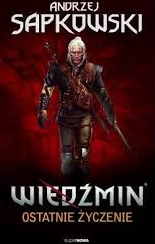
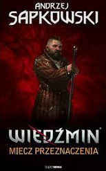
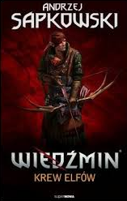
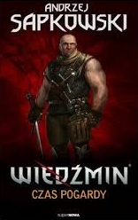
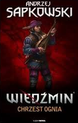
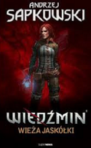
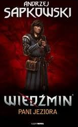
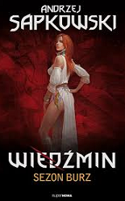

Książki autorstwa Andzrzeja Sapkowskiego były początkiem uniwersum Wiedźmina. Wydany w 1993 zbiór opowiadań pt."Ostatnie Życzenie" zawierał historie z różnych okresów czasowych przeplatanych tz. Głosami rozsądku. Niedługo po nim został wydany kolejny zbiór opowiadań - "Miecz Przeznaczenia" dając nam kolejną okazję zgłebienia swiata białogłowego zabójcy potworów. Natomiast 1994 wyszła pierwcza część Sagi - "Wiedźmin Krew Elfów", która rozpoczeła ciągłą historie Geralta, Yennefer i Ciri. Następnymi były "Czas pogardy" (1995), "Chrzest ognia" (1996), "Wieża Jaskółki "(1997), "Pani Jeziora" (1999). Najnowszą wydaną częscią jest "Sezon Burzy" (2013) jest to część z poza Sagi dziejąca sie na chwilę przed wydarzeniami z opowiadania "Wiedźmin".        